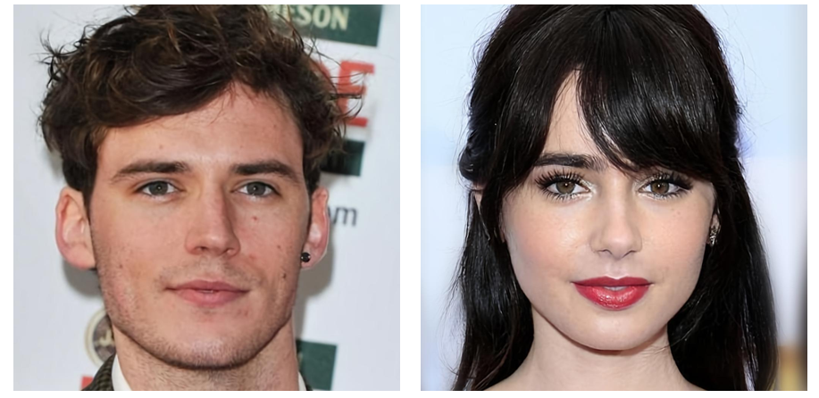
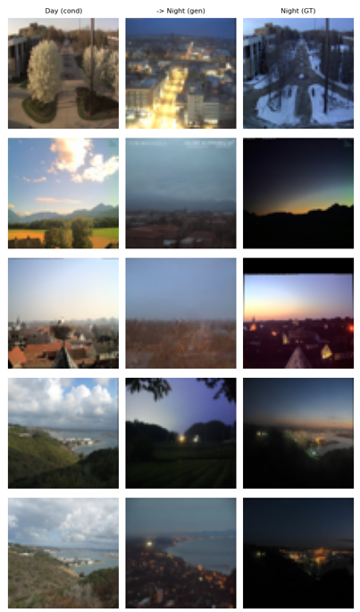
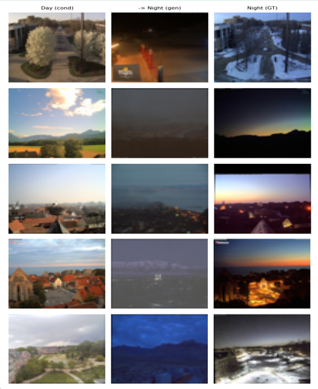

1. Context & Objective
I built a conditional diffusion model (cDDPM) that translates facial attributes — converting male portraits to female and vice versa — without any external pretrained backbone. A secondary experiment applies the same architecture to Day2Night landscape conversion.
Technical Goal
The challenge: give the model a reference image and have it transfer only the relevant visual attributes — hair, facial structure, skin tone — without overwriting everything else.
Translation Tasks
- Primary task: Facial attribute translation on the CelebA dataset. Male portraits are converted to female and vice versa.
- Secondary task: Day-to-night landscape conversion, used to benchmark generalization beyond facial data.
Technology Stack

CelebA dataset samples: source and target domain portraits used for training.
2. Architecture & Models
2.1 U-Net Denoising Backbone
The model works by destroying and rebuilding: it learns to add noise to an image in steps, then reverse that process — but steered by a reference image to land in a different domain. The backbone is a U-Net that predicts the noise at each step, guided by the conditioning signal until a clean, domain-translated image emerges.
Core Architecture Components
- Backbone: U-Net with contracting encoder, expanding decoder, and skip connections
- Noise Scheduler: Linear scheduler for forward diffusion — noise variance increases uniformly across timesteps
- Self-Attention: Captures long-range spatial dependencies within feature maps
- Cross-Attention: Relates image features directly to the conditioning signal at each layer
- Condition Injection: Condition image encoded and injected via input concatenation
The encoder compresses the image down to a compact representation; skip connections carry fine detail forward so the decoder can reconstruct sharp edges and textures without losing them in the bottleneck. Predicting noise rather than the clean image makes training more stable — the target is always a simple Gaussian, not a complex natural image.

Global U-Net architecture: conditioning injection and attention layers at each depth.

Forward diffusion process: the linear scheduler progressively corrupts the image across timesteps.
2.2 Attention Placement Strategy
Different layers handle different jobs — I matched the attention mechanism to what each layer actually needs to do.
Attention Placement
- Feature maps (high resolution): Linear Self-Attention — full attention at this resolution would be computationally prohibitive. Keeps features spatially consistent during denoising without the cost blowup.
- Skip connections: Cross-Attention here is critical — it stops the decoder from blindly reusing encoder features that don't match the target domain. The reference image actively decides what the decoder receives.
- Bottleneck: Full Self-Attention only here, where the spatial resolution is smallest and cost is manageable. Global coherence at this compressed point shapes the entire output before the decoder rebuilds the image.
Think of it as three specialized filters placed at three key checkpoints: one that keeps the feature maps internally consistent while denoising, one that decides which encoder context the decoder should trust, and one that ensures the final compressed representation is globally coherent before reconstruction begins.
3. Implementation & Key Optimizations
Three design decisions drove the performance differences across experiment configurations: whether training pairs source and target images explicitly, how the condition enters the network, and whether guidance is applied at inference.
Dataset Strategy: Paired vs Unpaired Training
Paired training shows the model exact before/after examples — stronger results, harder to scale. Unpaired training learns the translation pattern statistically from two separate pools of images — more flexible, but weaker attribute transfer.

Input concatenation baseline: the condition is appended as extra channels at the network input, limiting its influence to early layers only.
Injection Method Comparison
I feed the reference image to the network by appending it as extra input channels — simple, but limited to early-layer influence only. I tested two configurations: a baseline (unpaired, no guidance) against paired training with CFG.
| Configuration | Injection Method | Data Pairing | Guidance |
|---|---|---|---|
| Baseline (Unpaired) | Input Concatenation | Unpaired | None |
| Paired + CFG | Input Concatenation | Paired | Classifier-Free Guidance |
Classifier-Free Guidance (CFG)
Without guidance, the model over-commits to the reference image and produces outputs that look unnatural — it follows instructions too literally. CFG fixes this by randomly dropping the condition during training (20% probability), teaching the model to generate under both conditioned and unconditioned paths.
CFG at Inference
At inference, I blend the conditioned and unconditioned predictions to control how strongly the reference image steers the output — high weight means stronger attribute transfer, low weight means more natural-looking result. The 20% dropout during training keeps both modes reliable.
Training Configuration
Training Pipeline
- 1. Sample source image and condition image (paired or unpaired)
- 2. Forward diffusion: add noise via linear scheduler across timesteps
- 3. Drop condition with 20% probability (CFG training)
- 4. Forward pass through U-Net with concatenated condition at input
- 5. Compute Huber loss against ground-truth noise
- 6. Backward pass, update weights
- At inference: interpolate conditioned and unconditioned predictions via CFG
4. Results & Visuals
4.1 Facial Attribute Translation (CelebA)
The model successfully transfers hair length, facial structure, and makeup — but doesn't preserve who the person is. It knows what female faces look like. It doesn't know how to make this specific face female.
The fix is a face recognition loss — a signal that directly penalizes the model for changing who the person is. Without it, more training won't help; the model is never told identity matters. Injecting the reference image deeper into the network (beyond just the input) would also keep it influential where it counts.

Generated samples and training loss curve for the paired image configuration.
4.2 Injection Method Comparison

Generated samples and training loss curve for the unpaired image configuration.
Paired training with CFG clearly wins. The reference image only enters at the input, so it stops influencing the deeper layers that handle the visual attributes that matter most — paired data and CFG both compensate for that structural limitation.
4.3 Day2Night Benchmark: CFG vs No CFG
I ran Day2Night conversion with and without guidance to isolate exactly how much CFG contributes — on a simpler task where everything else is held constant.
| Model | Training Paradigm | Conditioning | Task |
|---|---|---|---|
| cDDPM (54 epochs) | Diffusion, iterative denoising | Concatenation + CFG | Day2Night |
| GAN (Baseline) | Adversarial, generator-discriminator | Standard conditional | Day2Night |
With Classifier-Free Guidance

Training and validation loss curves — Day2Night with CFG.

Generated Day2Night outputs with CFG enabled.
Without Classifier-Free Guidance

Training and validation loss curves — Day2Night without CFG.

Generated Day2Night outputs without CFG.
On the Noisy Validation Curve
The validation loss bounces instead of converging — a learning rate issue, not a generalization failure. The optimizer is overshooting good solutions rather than settling into them. Training loss trends down correctly, so the fix is simple: train longer at a lower rate.
CFG produces noticeably cleaner results. Without it, the reference image has weaker influence at inference and the output drifts. Both runs learned equally well — the quality gap is entirely from the guidance mechanism, not from training.
4.4 Stress Test: Personal Portrait

Left: condition (source portrait). Right: the model's generated output.
The model was tested on a personal portrait. The objective was simple: take a real photo of the author and translate it into a female version that preserves the original features. What it produced instead could generously be described as abstract.
The output keeps a rough facial geometry. Everything else collapses: skin tone drifts, expression dissolves, the background merges with the foreground, and the overall result looks less like a translated portrait and more like a late-night encounter in a haunted house. The model did not turn the author into a woman. It turned him into a demon.
What this actually demonstrates
This result is not an edge case. It is a precise illustration of the core limitation: the condition injection mechanism steers the domain but provides no structural anchor for source identity. The model knows what female faces look like. It does not know how to make this specific face look female. That gap is exactly what refined spatial conditioning and an identity loss are designed to close in future work.
5. Conclusion & Future Perspectives
Project Summary
I built and trained a working conditional diffusion pipeline from scratch — paired training with guidance beats unpaired training in every configuration tested. The main open problem: condition injection via concatenation only influences early layers. The fix — cross-attention over the condition at every network depth — is the primary next step.
Key Outcomes
- Paired training with CFG outperforms unpaired training without guidance for attribute transfer
- CFG at 20% dropout enables stable inference guidance without destabilizing training
- Paired training improves attribute correspondence — the model learns from explicit examples rather than inferring the pattern from two separate image pools
- The model changes who the person is, not just what they look like — identity preservation is the primary open problem
Future Improvements
- Anchor conditioning: Reserve dedicated regions in the feature maps so the reference image consistently controls specific attributes — tighter output without over-directing the generation
- Identity Loss: Add a face recognition loss so the model is explicitly penalized when the person's identity changes during translation
- Longer training at lower rate: Retrain beyond 54 epochs with a reduced learning rate to resolve the noisy validation curves and reach a stable optimum
- Deeper condition injection: Replace input-only concatenation with cross-attention at every layer depth so the reference image keeps influencing the output throughout the entire network
- Classifier Guidance: Pair CFG with an attribute classifier to apply targeted semantic steering at inference time
Output where condition signal was not followed
Example where the reference image failed to redirect the output toward the target domain.
Proposed future conditioning approach
Future direction: reserving dedicated feature map regions to anchor specific visual attributes during generation.
Resources & Links
Associated Documents
- Primary Dataset: CelebA (Large-scale CelebFaces Attributes Dataset) — facial attribute annotations across 200k+ images
- Secondary Dataset: Day2Night landscape pairs for generalization benchmarking
- Source Code: Training and evaluation scripts (link to be added)